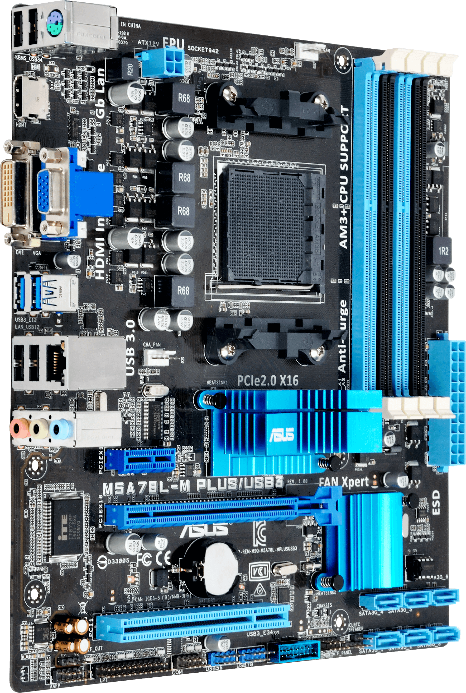

Hardware e Software
Como vimos na introdução, um computador é capaz de realizar tarefas por meio de seus componentes físicos, chamados hardware, e de programas, conhecidos como software. Neste tópico, vamos aprofundar esses conceitos, conhecendo alguns dos principais componentes de hardware e entendendo melhor os diferentes tipos de software.
Hardware

Hardware é o conjunto de partes físicas e tangíveis que compõem um computador. Ele inclui todos os dispositivos e peças responsáveis por executar as tarefas definidas pelo software. Entre seus elementos estão o processador (CPU), a memória RAM, os dispositivos de armazenamento (HDs e SSDs), a placa-mãe, as fontes de alimentação e os periféricos, como teclado, mouse, monitor e impressora.A seguir, veremos em detalhes os principais componentes que constituem o hardware de um computador.
Gabinete
O gabinete é a estrutura que protege e organiza os componentes internos de um computador, como a placa-mãe, o processador, a memória RAM, os dispositivos de armazenamento (HDs ou SSDs) e a fonte de alimentação. Além de oferecer proteção física contra poeira, impactos e superaquecimento, o gabinete também auxilia na ventilação, garantindo que o fluxo de ar mantenha os componentes em temperatura adequada. Existem diferentes modelos e tamanhos — como "Mini torre", "torre média" (Mid Tower) e "torre alta" (Full Tower) — que variam conforme o espaço disponível e o tipo de uso, desde computadores domésticos até máquinas de alto desempenho.

Placa-mãe
A placa-mãe, também chamada de motherboard, é um dos componentes mais importantes de um computador, pois funciona como a base central onde todos os outros elementos do sistema são conectados e se comunicam. Ela abriga o processador (CPU), os módulos de memória RAM, os slots para placas de expansão (como placas de vídeo e de som), além de conectar dispositivos de armazenamento, portas USB, rede e periféricos. A placa-mãe também distribui a energia elétrica proveniente da fonte de alimentação para cada componente e gerencia a troca de informações entre eles, garantindo que o computador funcione de maneira estável e eficiente.
Processador (CPU)
O processador, também conhecido como CPU – Central Processing Unit (Unidade Central de Processamento), é o componente mais importante de um computador, responsável por interpretar e executar as instruções enviadas pelos programas e pelo sistema operacional. Ele realiza cálculos, operações lógicas e coordena o funcionamento de todos os outros componentes, razão pela qual é frequentemente chamado de “cérebro” do computador. A velocidade e a eficiência da CPU influenciam diretamente o desempenho geral da máquina. Processadores modernos contam com vários núcleos (cores), permitindo a execução simultânea de múltiplas tarefas
Coolers
Os coolers são dispositivos de refrigeração responsáveis por manter os componentes do
computador em temperaturas seguras durante o funcionamento. Eles ajudam a evitar superaquecimento, que pode
comprometer o desempenho e a vida útil da CPU, GPU, placa-mãe e outros componentes internos.
Existem diferentes tipos de coolers:
Coolers de CPU: Geralmente compostos por um dissipador de calor e um ventilador, responsáveis
por resfriar diretamente o processador.
Coolers de GPU: Integrados ou adicionais, ajudam a dissipar o calor gerado pelas placas de
vídeo, principalmente durante tarefas gráficas intensas.
Coolers de gabinete: Instalados nas entradas e saídas de ar do gabinete, garantem a circulação
de ar adequada, removendo o ar quente e trazendo ar frio para dentro do sistema.

Memória RAM
A memória RAM (Random Access Memory – Memória de Acesso Aleatório) é um tipo de memória volátil, utilizada em computadores e outros dispositivos eletrônicos para armazenar dados temporariamente enquanto o sistema está em funcionamento. Ela guarda as informações e instruções que o processador precisa acessar rapidamente, permitindo que programas e sistemas operem de maneira ágil e eficiente. Quanto maior a capacidade e a velocidade da RAM, melhor será o desempenho do computador ao executar várias tarefas ao mesmo tempo, como navegar na internet, editar documentos, assistir a vídeos ou jogar.

Armazenamento (HDs, SSDs e SSDs M.2 NVMe)
As unidades de armazenamento são responsáveis por guardar arquivos e dados do
computador a longo prazo, mesmo quando ele está desligado. Elas permitem que sistemas operacionais, programas e
documentos fiquem disponíveis sempre que necessário, desempenhando um papel essencial no desempenho geral do
sistema.
HD (Hard Disk Drive / Unidade de Disco Rígido):
Os HDs utilizam discos magnéticos giratórios para armazenar dados, oferecendo grandes capacidades a um custo
relativamente baixo. No entanto, apresentam velocidades de leitura e gravação mais lentas devido à natureza
mecânica de seu funcionamento, sendo mais indicados para armazenamento de grandes volumes de dados.
 SSD (Solid-State Drive / Unidade de Estado Sólido):
SSD (Solid-State Drive / Unidade de Estado Sólido):
Os SSDs utilizam memória flash para armazenar dados, proporcionando velocidades de leitura e gravação muito mais
rápidas que os HDs. São mais resistentes a choques e vibrações, tornando-os ideais para laptops e dispositivos
móveis. Embora geralmente tenham custo mais elevado, oferecem maior desempenho e agilidade no acesso a arquivos
e programas.
SSD M.2 NVMe:
Os SSDs M.2 NVMe representam a evolução dos SSDs tradicionais, oferecendo desempenho ainda mais rápido graças ao
protocolo NVMe (Non-Volatile Memory Express), que se comunica diretamente com a placa-mãe através do slot M.2,
eliminando a limitação do barramento SATA.
Esses SSDs são ideais para tarefas que exigem alta velocidade de leitura e gravação, como jogos modernos, edição
de vídeo e softwares profissionais. Além de compactos, permitem inicialização quase instantânea do sistema
operacional e carregamento rápido de programas.
 Diferença entre M.2 SATA e M.2 NVMe:
Diferença entre M.2 SATA e M.2 NVMe:
Embora ambos utilizem o formato M.2, a principal diferença está no protocolo de comunicação:
M.2 SATA: utiliza o protocolo SATA tradicional, oferecendo velocidades de leitura e gravação
semelhantes aos
SSDs SATA padrão.
M.2 NVMe: utiliza o protocolo NVMe, que se comunica diretamente com a placa-mãe via barramento
PCIe, permitindo
velocidades muito superiores, sendo mais indicado para tarefas que exigem alto desempenho, como edição de vídeos
em alta resolução, jogos pesados e softwares profissionais.
Placa de Vídeo (GPU)
A placa de vídeo, também conhecida como GPU – Graphics Processing Unit (Unidade de
Processamento Gráfico), é um componente de hardware responsável por gerar, processar e renderizar imagens e
gráficos em um computador. Ela desempenha um papel essencial em jogos, edição de vídeos, modelagem 3D e qualquer
aplicação que exija processamento gráfico intenso.
Existem dois tipos principais de placas de vídeo:
Placas dedicadas: São instaladas em slots PCIe na placa-mãe e possuem memória própria (VRAM),
oferecendo alto
desempenho para tarefas gráficas complexas, como jogos modernos e softwares de edição profissional.
Placas integradas: Vêm embutidas na CPU ou na placa-mãe, compartilhando a memória do sistema.
São adequadas para
tarefas básicas, como navegação na internet, reprodução de vídeos e uso de programas leves, mas têm limitações
de performance em aplicações mais exigentes.

Fonte de Alimentação
A fonte de alimentação é o componente responsável por fornecer energia elétrica para
todos os componentes do computador, convertendo a corrente alternada (AC) da rede elétrica em corrente contínua
(DC) adequada para o funcionamento de CPU, placa-mãe, GPU, HDs, SSDs e periféricos.
Ela desempenha um papel fundamental na estabilidade e segurança do sistema, garantindo que cada componente
receba a tensão correta e protegendo-os contra sobrecargas e curtos-circuitos.
Existem diferentes tipos de fontes, com capacidades variadas, geralmente medidas em watts (W), que determinam a
quantidade máxima de energia que podem fornecer. Fontes de maior qualidade também incluem certificações de
eficiência energética, como 80 Plus, que indicam menor desperdício de energia e operação mais confiável.

Monitor
O monitor é o principal dispositivo de saída de vídeo de um computador, responsável por
exibir imagens, textos, vídeos e gráficos gerados pelo sistema. Ele funciona como uma tela visual onde o usuário
pode interagir com o sistema operacional, aplicativos e programas.
Existem diferentes tipos de monitores, com tecnologias variadas, como LCD, LED, OLED e IPS, que influenciam a
qualidade de imagem, brilho, contraste e ângulo de visão. Além disso, alguns monitores possuem altas taxas de
atualização e tempos de resposta rápidos, características importantes para jogos e edição de vídeos.
O tamanho, a resolução e a proporção da tela também são fatores essenciais, determinando a quantidade de
informações exibidas e a nitidez das imagens. Monitores modernos podem ainda suportar múltiplas entradas,
permitindo a conexão de computadores, notebooks e outros dispositivos, facilitando a produtividade e a
experiência multimídia.

Mouse
O mouse é um dispositivo de entrada que permite ao usuário controlar o cursor na tela
de um computador, facilitando a navegação e a interação com programas e sistemas operacionais. Ele possibilita
ações como clicar, arrastar, selecionar itens e acessar funções específicas de softwares.
Os principais componentes e funções de um mouse são:
Botão esquerdo: O mais utilizado, serve para selecionar itens, abrir arquivos, clicar em ícones
e executar a
maioria das interações com a interface.
Botão direito: Usado para abrir menus contextuais, fornecendo opções adicionais de ação sobre o
item clicado.
Roda de rolagem (Scroll): Localizada entre os botões, permite rolar páginas para cima e para
baixo. Em muitos
mouses, a roda também pode ser clicada, funcionando como um terceiro botão, útil para funções adicionais em
aplicativos ou navegadores.
Teclado
O teclado é um periférico de entrada que permite ao usuário inserir dados e controlar
funções no computador por meio do pressionamento de teclas. Ele é essencial para digitar textos, números e
executar comandos em softwares e sistemas operacionais. A maioria dos teclados é composta por, pelo menos, cinco
grupos de teclas principais:
Teclas de função: Localizadas na parte superior do teclado, identificadas como F1 a F12, essas
teclas executam
comandos específicos dependendo do software ou do sistema operacional. Por exemplo, a tecla F1 geralmente abre a
ajuda de um programa, enquanto F5 é usada para atualizar páginas ou janelas.
Teclas alfanuméricas: Contêm letras, números e alguns símbolos. São o grupo mais utilizado do
teclado e permitem
inserir textos e números em documentos, planilhas e aplicativos.
Teclas de navegação: Servem para mover o cursor, navegar por documentos ou páginas da web e
editar textos. Entre
elas estão Home, End, Page Up, Page Down, Insert e as teclas de direção (setas).
Teclado numérico (numpad): Localizado geralmente no lado direito de teclados de desktop e em
alguns laptops,
contém apenas números (0 a 9) e operações matemáticas básicas, facilitando cálculos e inserção rápida de
números.
Teclas de controle e modificação: Incluem Ctrl, Alt, Shift, Caps Lock, Tab, Esc e outras,
usadas em combinação
com outras teclas para executar comandos, atalhos e funções especiais no sistema operacional e nos programas.
Software

Enquanto o hardware representa os componentes físicos de um computador, o software é o
conjunto de programas e instruções que dizem ao hardware o que fazer. Sem o software, os computadores seriam
apenas máquinas inertes, incapazes de executar tarefas úteis.
O software pode ser dividido em diferentes categorias, dependendo de sua função e forma de uso:
- Software de Sistema
O software de sistema é responsável por gerenciar o hardware do computador e fornecer uma base para a execução de outros programas. Ele inclui:
- Sistema Operacional (SO): É o principal software de sistema, que controla todos os recursos do computador, gerencia arquivos, dispositivos de entrada e saída e oferece uma interface para o usuário interagir com o sistema. Exemplos de sistemas operacionais incluem Windows, Linux, macOS e Android.
- Drivers: Programas que permitem que o sistema operacional se comunique corretamente com os dispositivos de hardware, como impressoras, placas de vídeo, mouses e teclados.
- Utilitários de Sistema: Ferramentas que ajudam na manutenção do computador, como antivírus, softwares de backup, desfragmentadores de disco e programas de limpeza de arquivos temporários.
- Software Aplicativo
O software aplicativo é projetado para atender às necessidades específicas dos usuários, permitindo realizar tarefas como produção de textos, navegação na internet, edição de imagens e planilhas eletrônicas. Alguns exemplos incluem:
- Processadores de texto (como Microsoft Word e LibreOffice Writer)
- Planilhas eletrônicas (como Excel e Google Sheets)
- Navegadores de internet (como Google Chrome e Mozilla Firefox)
- Softwares de edição multimídia (como Photoshop, Premiere e Audacity)
- Jogos e aplicativos educacionais
- Software de Programação
Também conhecido como ferramentas de desenvolvimento, esse tipo de software permite criar novos programas e aplicativos. Inclui:
- Compiladores e Interpretadores: Traduzem o código escrito em linguagens de programação para a linguagem compreendida pelo computador.
- Editores de Código e IDEs(Integrated Development Environment): Softwares como Visual Studio Code, PyCharm e Eclipse que auxiliam o desenvolvedor a escrever, testar e depurar programas de forma mais eficiente.